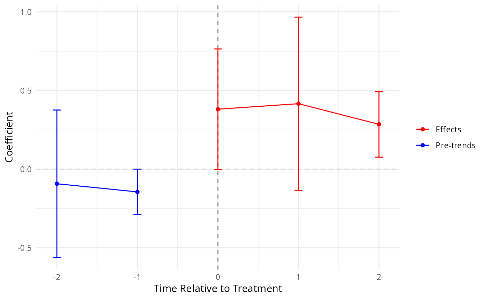
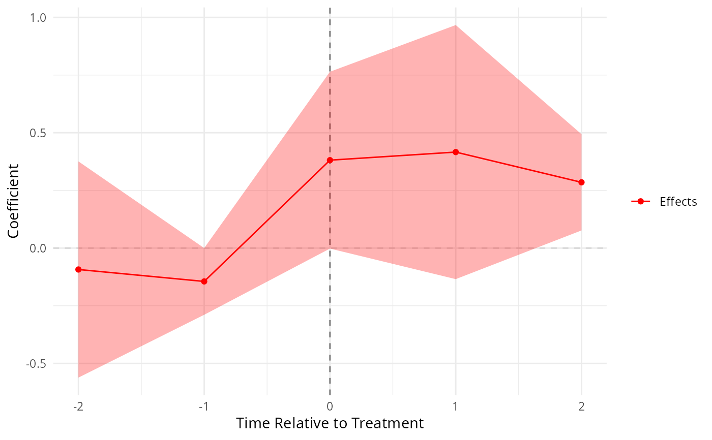

Produces a ggplot2 event-study figure from a did_impute result object
or from explicitly supplied coefficient and standard-error lists.
Pre-trend estimates keyed pre<k> are placed at \(x = -k\); horizon
estimates keyed tau<k> at \(x = +k\). Confidence intervals use the
critical value \(z_{1-\alpha/2}\).
Usage
event_plot(
results_obj = NULL,
pretrends = NULL,
pretrends_std = NULL,
effects = NULL,
effects_std = NULL,
plot_type = c("rcap", "rarea"),
significance_level = 0.05,
together = FALSE,
xlab = "Time Relative to Treatment",
ylab = "Coefficient",
title = NULL,
pretrends_color = "blue",
effects_color = "red",
...
)Arguments
- results_obj
A
did_imputeresult object, orNULL.- pretrends
Named list of pre-trend estimates (keys
pre<k>). Used only whenresults_objisNULL.- pretrends_std
Named list of pre-trend standard errors.
- effects
Named list of effect estimates (keys
tau<k>).- effects_std
Named list of effect standard errors.
- plot_type
"rcap"(error bars, default) or"rarea"(shaded ribbon).- significance_level
Significance level for CIs (default 0.05, giving 95 percent CIs).
- together
Logical; if
TRUEpre-trends and effects are combined into a single series (defaultFALSE).- xlab
X-axis label.
- ylab
Y-axis label.
- title
Optional plot title.
- pretrends_color
Colour for pre-trend series (default
"blue").- effects_color
Colour for effects series (default
"red").- ...
Currently unused.
Value
A ggplot object. The underlying data frame (accessible as
p$data) contains columns x, coef, err, and
group.
Examples
# Minimal synthetic panel for event-study
set.seed(42)
n_units <- 4; n_t <- 6
df <- expand.grid(i = seq_len(n_units), t = seq_len(n_t))
df$Ei <- ifelse(df$i <= 2, 4L, NA_integer_)
df$y <- 0.5 * (!is.na(df$Ei) & df$t >= df$Ei) + rnorm(nrow(df), sd = 0.2)
res <- did_impute(df, y = "y", i = "i", t = "t", Ei = "Ei",
horizons = 0:2, pretrends = 2, minn = 0)
#> The number of treated entities for 'wtr0' is too small for some cohorts. Standard Errors may be wrong; consider using avgeffectsby option, averaging the the effect by treated X post variable.
#> The number of treated entities for 'wtr1' is too small for some cohorts. Standard Errors may be wrong; consider using avgeffectsby option, averaging the the effect by treated X post variable.
#> The number of treated entities for 'wtr2' is too small for some cohorts. Standard Errors may be wrong; consider using avgeffectsby option, averaging the the effect by treated X post variable.
event_plot(res)

event_plot(res, plot_type = "rarea", together = TRUE)
